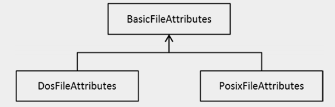

JAVA SE 8
Java File I/O (NIO.2)
Java oferece um rico conjunto de APIs que você pode usar para manipular arquivos e diretórios. O Java 7 introduziu um conjunto de APIs de I/O, chamadas NIO.2, que ofereciam formas convenientes de executar operações relacionadas a um sistema de arquivos. No Java 8, você pode usar a API de Stream com o NIO.2. O capítulo anterior cobriu os fundamentos de I/O; você aprendeu como ler e escrever no console e como usar fluxos para ler e gravar em arquivos. Neste capítulo, você aprenderá a operar em caminhos de arquivos e diretórios usando a interface Path. Você também aprende a executar várias operações de arquivo, como criar, mover, copiar e excluir usando a classe Arquivos. Por fim, você vê como usar a API de fluxo com NIO.2. Este capítulo usa interfaces funcionais no pacote java.util.function e na API Stream no pacote java.util.stream, e presumimos que você tenha lido os Capítulos 3, 4, 5 e 6 antes de ler este capítulo.
Fornecemos caminhos de arquivos e diretórios, supondo que você esteja usando uma máquina Windows. Se você estiver no Linux, no Mac OS ou em qualquer outra plataforma, talvez seja necessário fazer pequenas alterações nos nomes dos caminhos para que os programas funcionem em sua máquina.
Todos os códigos apresentado estão no reposítorio do github e poderão ser acessado através do link no final da página.
Usando a interface Path(caminho)
Os sistemas de arquivos geralmente formam uma árvore. O sistema de arquivos inicia com um diretório raiz que contém arquivos e diretórios (os diretórios também são chamados de pastas no Windows). Cada diretório, por sua vez, pode ter subdiretórios ou conter arquivos. Para localizar um arquivo, basta reunir os diretórios do diretório raiz no diretório imediato que contém o arquivo, juntamente com um separador de arquivos, seguido do nome do arquivo. Por exemplo, se o arquivo myfile.txt residir em um diretório mydocs, que reside no diretório raiz C:\, o caminho do arquivo será C:\mydocs\myfile.txt. Cada arquivo tem um caminho único para localizá-lo (além dos links simbólicos).
Um caminho pode ser um caminho absoluto (como C:\mydocs\myfile.txt), que é iniciado por um elemento raiz. Por outro lado, um caminho pode ser especificado como um caminho relativo. Quando você tenta compilar um programa Java, escreva algo como javac programFileName.java; Este exemplo é especificado como o caminho do arquivo de origem Java para o direito selecionado, portanto, é um caminho relativo. Você precisa de um caminho de referência (como o caminho do diretório atual, neste caso) para interpretar um caminho relativo.
Antes de prosseguir, vamos falar sobre links simbólicos. Um link simbólico é como um ponteiro ou referência a um arquivo real. Em geral, os links simbólicos são transparentes para os aplicativos, o que significa que as operações são executadas diretamente nos arquivos, e não nos links (exceto, é claro, para operações específicas de link simbólico).
A interface Path é uma abstração de programação para um caminho. Um objeto de caminho contém os nomes de diretórios e arquivos que formam o caminho completo do arquivo/diretório representado pelo objeto Path; A abstração Path fornece métodos para extrair elementos do caminho, manipulá-los e anexá-los. Você verá mais tarde que quase todos os métodos que acessam arquivos / diretórios para obter informações sobre eles ou manipulá-los usam objetos Path.
Métodos importantes na interface Path
| Método | Descrição |
|---|---|
| Path getRoot() | Retorna um objeto Path representando a raiz do caminho fornecido ou null se o caminho não tiver uma raiz. |
| Path getFileName() | Retorna o nome do arquivo ou nome do diretório do caminho fornecido. Observe que o nome do arquivo / diretório é o último elemento ou nome no caminho fornecido. |
| Path getParent() | Retorna o objeto Path representando o pai do caminho fornecido ou null se nenhum componente pai existir para o caminho. |
| int getNameCount() | Retorna o número de nomes de arquivos / diretórios no caminho fornecido; retorna 0 se o caminho dado representar a raiz. |
| Path getName(int index) | Retorna o nome do arquivo / diretório ith; o índice 0 começa do nome mais próximo da raiz. |
| Path subpath(int beginIndex, int endIndex) | Retorna um objeto Path que faz parte desse objeto Path; o objeto Path retornado tem um nome que começa em beginIndex e termina com o elemento no índice endIndex - 1. Em outras palavras, beginIndex é inclusivo do nome nesse índice e exclusivo do nome em endIndex. Este método pode lançar IllegalArgumentException se beginIndex é >= número de elementos, ou endIndex <= beginIndex ou endIndex> número de elementos. |
| Path normalize() | Remove elementos redundantes no caminho, como. (Símbolo de ponto que indica o diretório atual) e .. (símbolo de dois ponto que indica o diretório pai). |
| Path resolve(Path other) - Path resolve(String other) | Resolve um caminho contra ao caminho fornecido. Por exemplo, esse método pode combinar o caminho fornecido com o outro caminho e retornar o caminho resultante |
| Boolean isAbsolute() | Retorna true se o caminho fornecido for um caminho absoluto; retorna false se não (quando o caminho dado é um caminho relativo, por exemplo). |
| Path startsWith(String path) - Path startsWith(Path path) | Retorna true se este objeto Path iniciar com o caminho fornecido ou false caso contrário.. |
| Path toAbsolutePath() | Retorna o caminho absoluto. |
Vamos criar um objeto Path e recuperar as informações básicas associadas ao objeto. O próximo exemplo mostra como criar um objeto Path e obter informações sobre ele.
//PathInfo1.java
import java.nio.file.Path;
import java.nio.file.Paths;
// Classe para ilustrar como usar a interface Path e seus métodos
public class PathInfo1 {
public static void main(String[] args) {
// cria um objeto Path chamando o método estático get () na classe Paths
Path testFilePath = Paths.get("D:\\test\\testfile.txt");
// recupera informações básicas sobre o caminho
System.out.println("Printing file information: ");
System.out.println("\t file name: " + testFilePath.getFileName());
System.out.println("\t root of the path: " + testFilePath.getRoot());
System.out.println("\t parent of the target: " + testFilePath.getParent());
// elementos do caminho de impressão
System.out.println("Printing elements of the path: ");
for(Path element : testFilePath) {
System.out.println("\t path element: " + element);
}
}
}
O programa imprime o seguinte:
Printing file information: file name: testfile.txt root of the path: D:\ parent of the target: D:\test Printing elements of the path: path element: test path element: testfile.txt
A saída é autoexplicativa. Vamos examinar o programa:
- Primeiro, você cria uma instância de Path usando o método get() da classe Path. O método get() espera um string representando um caminho como uma entrada. Essa é a maneira mais fácil de criar um objeto Path.
- Observe que você usa um caractere de escape (\) em Paths.get ("D:\\test\\testfile.txt"). No caminho, se você fornecesse D:\test, tal como \t significaria um caractere de tabulação e você obteria um java.nio.file.InvalidPathException ao executar o programa. Certifique-se de fornecer caracteres de escape necessários em cadeias de caminho.
- Você extrai o nome do arquivo representado por este objeto Path usando o método getFilename() do objeto Path.
- Você também usa getRoot() para obter o elemento raiz do objeto Path e getParent() para obter o diretório pai do arquivo de destino.
- Você itera sobre os elementos no caminho usando um forloop. Como alternativa, você pode usar getNameCount() para obter os elementos numéricos ou nomes no caminho e getName(index) para iterar e acessar elementos / nomes um por um.
Vamos tentar outro exemplo. Ele explora alguns aspectos interessantes de um objeto Path, por exemplo, como obter um caminho absoluto de um caminho relativo e como você pode normalizar o caminho. Antes de olhar o exemplo, você precisa primeiro entender os métodos que usa:
- O método toUri() retorna o URI(um caminho que pode ser aberto de um navegador) do caminho.
- O método toAbsolutePath() retorna o caminho absoluto de um determinado caminho relativo. Se o caminho de entrada já for um caminho absoluto, o método retornará o mesmo objeto.
- O método normalize() executa a normalização no caminho de entrada. Em outras palavras, ele remove símbolos desnecessários (como .e ..) do objeto Path.
- toRealPath() é um método interessante. Ele retorna um caminho absoluto do objeto de caminho de entrada (como toAbsolutepath()). Também normaliza o caminho (como em normalize()).Além disso, se as opções de vinculação forem escolhidas corretamente, ela resolve os links simbólicos. No entanto, o arquivo/diretório de destino deve existir no sistema de arquivos, que é um pré-requisito de nota para outros métodos de caminho.
A seguir é mostrado o exemplo. Suponha que o nome do arquivo Test não exista em seu sistema de arquivos.
//PathInfo2.java
import java.io.IOException;
import java.nio.file.LinkOption;
import java.nio.file.Path;
import java.nio.file.Paths;
// Para ilustrar métodos importantes como normalize (), toAbsolutePath () e toRealPath ()
class PathInfo2 {
public static void main(String[] args) throws IOException {
// obtém um objeto de caminho com caminho relativo
Path testFilePath = Paths.get(".\\Test");
System.out.println("The file name is: " + testFilePath.getFileName());
System.out.println("Its URI is: " + testFilePath.toUri());
System.out.println("Its absolute path is: " + testFilePath.toAbsolutePath());
System.out.println("Its normalized path is: " + testFilePath.normalize());
// obtém outro objeto de caminho com caminho relativo normalizado
Path testPathNormalized = Paths.get(testFilePath.normalize().toString());
System.out.println("Its normalized absolute path is: " + testPathNormalized.toAbsolutePath());
System.out.println("Its normalized real path is: " + testFilePath.toRealPath (LinkOption.NOFOLLOW_LINKS));
}
}
Este código imprime o seguinte:
The file name is: Test Its URI is: file:///D:/OCPJP/programs/NIO2/./Test Its absolute path is: D:\OCPJP\programs\NIO2\.\Test Its normalized path is: Test Its normalized absolute path is: D:\OCPJP\programs\NIO2\Test Exception in thread "main" java.nio.file.NoSuchFileException: D:\OCPJP\programs\NIO2\Test at sun.nio.fs.WindowsException.translateToIOException(WindowsException.java:79) [... stack trace elided ...] at PathInfo2.main(PathInfo2.java:16)
Dependendo do diretório em que você executa este programa, o caminho do diretório será diferente para você. Este programa instancia um objeto Path usando um caminho relativo. O método getFileName() retorna o nome do arquivo de destino, como você viu no último exemplo. O método getUri() retorna o URI, que pode ser usado com navegadores, e o método toAbsolutePath() retorna o caminho absoluto do caminho relativo fornecido. (Observe que estamos executando o programa a partir da pasta D:/OCPJP/programs/NIO2/; portanto, ele se torna o diretório de trabalho atual e aparece no caminho absoluto e no URI.
Você chama o método normalize() para remover símbolos redundantes do caminho, portanto, ele remove o ponto principal. (Em muitos sistemas operacionais, o. [Símbolo de ponto único representa o diretório atual e .. [ponto duplo] representa o diretório pai.) Você instancia outro objeto Path usando saída normalizada e imprime o caminho absoluto novamente. Finalmente, você tenta chamar toRealpath(); no entanto, você obtém uma exceção (NoSuchFileException). Por quê? Porque você não criou o diretório Test no diretório de trabalho atual.
Agora, vamos criar um diretório de test no diretório D:/OCPJP/programs/NIO2/ e executar este exemplo novamente. Nós temos a seguinte saída:
The file name is: Test Its URI is: file:///D:/OCPJP/programs/NIO2/./Test/ Its absolute path is: D:\OCPJP\programs\NIO2\.\Test Its normalized path is: Test Its normalized absolute path is: D:\OCPJP\programs\NIO2\Test Its normalized real path is: D:\OCPJP\programs\NIO2\TestAgora a última chamada de toRealPath() funciona bem e retorna o caminho absoluto normalizado. Path fornece muitos outros métodos úteis, incluindo os listados anteriormente. Por exemplo, aqui está como usar o método resolve():
Path dirName = Paths.get("D:\\OCPJP\\programs\\NIO2\\");
Path resolvedPath = dirName.resolve("Test");
System.out.println(resolvedPath);
Este segmento de código imprime o seguinte:
D:\OCPJP\programs\NIO2\Test
Esse método resolve() considera o caminho fornecido como um diretório e una (resolve) o caminho passado com ele, conforme mostrado aqui.
Comparando dois Paths (Caminhos)
A interface Path fornece dois métodos para comparar dois objetos Path: equals() e compareTo(). O método equals() verifica a igualdade de dois objetos Path e retorna um valor booleano, enquanto compareTo() compara dois objetos Path caractere por caractere e retorna um inteiro: 0 se ambos os objetos Path forem iguais; um inteiro negativo se este caminho for lexicograficamente menor que o caminho do parâmetro; e um inteiro positivo se esse caminho for lexicograficamente maior que o caminho do parâmetro. O próximo exemplo contém um pequeno programa que demonstra esses métodos.
//PathCompare1.java
import java.nio.file.Path;
import java.nio.file.Paths;
// ilustra como usar compareTo e igual a e também mostra
// a diferença entre os dois métodos
class PathCompare1 {
public static void main(String[] args) {
Path path1 = Paths.get("Test");
Path path2 = Paths.get("D:\\OCPJP\\programs\\NIO2\\Test");
// comparando dois caminhos usando o método compareTo ()
System.out.println("(path1.compareTo(path2) == 0) is: "
+ (path1.compareTo(path2) == 0));
// comparando dois caminhos usando o método equals ()
System.out.println("path1.equals(path2) is: " + path1.equals(path2));
// comparando dois caminhos usando o método equals () com o caminho absoluto
System.out.println("path2.equals(path1.toAbsolutePath()) is "
+ path2.equals(path1.toAbsolutePath()));
}
}
Intencionalmente, um caminho é relativo e o outro é um caminho absoluto. Suponha que o diretório atual a partir do qual você está executando este programa seja D:\\OCPJP\\programs\\NIO2\\Test. Você consegue adivinhar a saída do programa?
O código é o seguinte:
(path1.compareTo(path2) == 0) is: false path1.equals(path2) is: false path2.equals(path1.toAbsolutePath()) is true
Vamos examinar o programa passo a passo:
- Primeiro compara dois caminhos usando o método compareTo(), que compara os caminhos por caractere e retorna um inteiro. Nesse caso, como um caminho é um caminho relativo e outro é um caminho absoluto, primeiro você espera receber uma mensagem informando que os caminhos não são iguais.
- Então você compara os dois caminhos usando equals(). O resultado é o mesmo, o que significa que, mesmo que os dois objetos Path estejam apontando para o mesmo arquivo / diretório, é possível que equals() retorne false. Você precisa ter certeza de que ambos os caminhos são caminhos absolutos.
- Na próxima etapa, você converterá o caminho relativo em um caminho absoluto e os comparará usando equals(). Desta vez, ambos os caminhos coincidem.
Mesmo se dois objetos Path apontarem para o mesmo arquivo/diretório, não é garantido que o método equals() retornará true. Você precisa ter certeza de que ambos são caminhos absolutos e normalizados para que uma comparação de igualdade seja bem-sucedida para os caminhos.
Usando a Classe File
A seção anterior discutiu como criar uma instância do Path e extrair informações úteis dela. Nesta seção, você usa objetos Path para manipular arquivos/diretórios. O Java 7 oferece uma classe Files (no pacote java.nio.file) que você pode usar para executar várias operações relacionadas a arquivos em arquivos ou diretórios. Observe que o Files é uma classe de utilitário, o que significa que é uma classe final com um construtor privado e consiste apenas em métodos estáticos. Assim, você pode usar a classe Files chamando os métodos estáticos que ela fornece, como copy() para copiar arquivos. Esta classe fornece uma ampla gama de funcionalidades. Você pode criar diretórios, arquivos ou links simbólicos; crie fluxos como fluxos de diretórios, canais de byte e fluxos de entrada/saída; examinar os atributos dos arquivos; ande na árvore de arquivos; e executar operações de arquivo, como leitura, gravação, cópia e exclusão. A tabela mostra os métodos importantes na classe Files.
| Método | Descrição |
|---|---|
| Path createDirectory(Path dirPath, FileAttribute<?>... dirAttrs) - Path createDirectories(Path dir, FileAttribute<?>... attrs) | Cria um arquivo fornecido pelo dirPath e defina os atributos fornecidos por dirAttributes. Pode lançar uma exceção como FileAlreadyExistsException ou UnsupportedOperationException (por exemplo, quando os atributos de arquivo não podem ser definidos como fornecidos por dirAttrs). A diferença entre createDirectory e createDirectories é que createDirectories cria diretórios intermediários dados pelo dirPath se eles ainda não estiverem presentes. |
| Path createTempFile(Path dir, String prefix, String suffix, FileAttribute<?>... attrs) | Cria um arquivo temporário com o prefixo, sufixo e atributos fornecidos no diretório fornecido pelo dir |
| Path createTempDirectory(Path dir, String prefix, FileAttribute<?>... attrs) | Cria um diretório temporário com os atributos de prefixo e diretório fornecidos no caminho especificado por dir. |
| Path copy(Path source, Path target, CopyOption... options) | Copia o arquivo da origem para o destino. CopyOption pode ser REPLACE_EXISTING, COPY_ATTRIBUTES ou NOFOLLOW_LINKS. Pode lançar exceções, como FileAlreadyExistsException |
| Path move(Path source, Path target, CopyOption... options) | Semelhante à operação de cópia, mas o arquivo de origem é removido. Se a origem e o destino estiverem no mesmo diretório, é um operação de renomeação de arquivos. |
| Verifica se os dois objetos Path localizam o mesmo arquivo | |
| boolean exists(Path path, LinkOption... options) | Verifica se existe um arquivo / diretório no caminho fornecido; pode especificar LinkOption.NOFOLLOW_LINKS para não seguir links simbólicos. |
| Boolean isRegularFile(Path path, LinkOption...) | Retorna true se o arquivo representado por path é um arquivo regular. |
| Boolean isSymbolicLink(Path path) | Retorna true se o arquivo representado por path é um link simbólico |
| Boolean isHidden(Path path) | Retorna true se o arquivo representado por path é um arquivo oculto. |
| long size(Path path) | Retorna o tamanho do arquivo representado pelo caminho em bytes. |
| UserPrincipal getOwner(Path path, LinkOption...), Path setOwner(Path path, UserPrincipal owner) | Obtém/define(get/set) o proprietário do arquivo |
| FileTime getLastModifiedTime(Path path, LinkOption...), Path setLastModifiedTime(Path path, FileTime time) | Obtém/define(get/set) o horário da última modificação para o arquivo especificado |
| Object getAttribute(Path path, String attribute, LinkOption...), Path setAttribute(Path path, String attribute, Object value, LinkOption...) | Obtém/define(get/set) o atributo especificado do arquivo especificado. |
Verificando as propriedades e metadados do arquivo
Na seção anterior da interface Path, você tentou descobrir se dois caminhos apontavam para o mesmo arquivo. Existe outra maneira de descobrir a mesma coisa: você pode usar o método isSameFile() da classe Files. O exemplo seguinte mostra como fazer isso.
//PathCompare2.java
import java.io.IOException;
import java.nio.file.Files;
import java.nio.file.Path;
import java.nio.file.Paths;
// ilustra como usar a classe Files para comparar dois caminhos
class PathCompare2 {
public static void main(String[] args) throws IOException {
Path path1 = Paths.get("Test");
Path path2 = Paths.get("D:\\OCPJP\\programs\\NIO2\\Test");
System.out.println("Files.isSameFile(path1, path2) is: "+ Files.isSameFile(path1, path2));
}
}
Assuma que o diretório D:\\OCPJP\\programs\\NIO2\\Test existe em sua maquina.
O programa vai imprimir assim:
Files.isSameFile(path1, path2) is: true
Nesse caso, você tem o diretório Test no caminho D:\OCPJP\programs\NIO2\, portanto, o código funcionou bem. Se o arquivo/diretório Test não existir no caminho fornecido, você obterá uma NoSuchFileException. Mas como você pode descobrir se existe um arquivo/diretório no caminho dado? A classe Files oferece o método exists() para fazer isso. Você também pode distinguir entre um arquivo e um diretório usando o método isDirectory() da classe Files.
//PathExists.java
import java.nio.file.Files;
import java.nio.file.LinkOption;
import java.nio.file.Path;
import java.nio.file.Paths;
class PathExists {
public static void main(String[] args) {
Path path = Paths.get(args[0]);
if(Files.exists(path, LinkOption.NOFOLLOW_LINKS)) {
System.out.println("The file/directory " + path.getFileName() + " exists");
// verifica se é um arquivo ou um diretório
if(Files.isDirectory(path, LinkOption.NOFOLLOW_LINKS)) {
System.out.println(path.getFileName() + " is a directory");
}
else {
System.out.println(path.getFileName() + " is a file");
}
}
else {
System.out.println("The file/directory " + path.getFileName()
+ " does not exist");
}
}
}
Este programa aceita um nome de file/directory na linha de comando e cria um objeto Path. Em seguida, use o método exists() da classe Files para descobrir se o file/directory existe. O segundo parâmetro do método exists() é o LinkOption, que é usada para especificar se deve seguir links simbólicos; Nesse caso, você não está seguindo links simbólicos. Se o file/directory associado ao caminho de entrada existir, você verificará se o caminho de entrada indica um arquivo ou um diretório, usando o método isDirectory() da classe Files.
Nós executamos este programa com dois argumentos de linha de comando diferentes e obtivemos a seguinte saída (suponha que PathExists.java esteja armazenado no diretório D:\OCPJP\programs\NIO2\src):
D:\OCPJP\programs\NIO2\src>java PathExists PathExists.java The file/directory PathExists.java exists PathExists.java is a file D:\OCPJP\programs\NIO2\src>java PathExists D:\OCPJP\ The file/directory OCPJP exists OCPJP is a directory D:\OCPJP\programs\NIO2\src>java PathExists D:\ The file/directory null exists null is a directory
Nesta saída, você deve ter notado o comportamento quando o nome da raiz (nome da unidade no Windows, nesse caso) é fornecido como um argumento. Um nome raiz é um diretório, mas path.getFileName() retorna null se o caminho for um nome raiz - daí o resultado.
Arquivos existentes podem não permitir que você leia, escreva ou execute com base em suas credenciais. Você pode verificar a capacidade de um programa de ler, gravar ou executar programaticamente. A classe Files fornece os métodos isReadable(), isWritable() e isExecutable() para fazer isso. O próximo exemplo usa estes métodos: para este programa, crie um arquivo chamado readonly.txt com as permissões legíveis e executáveis, mas não graváveis.
//FilePermissions.java
import java.nio.file.Files;
import java.nio.file.Path;
import java.nio.file.Paths;
class FilePermissions {
public static void main(String[] args) {
Path path = Paths.get(args[0]);
System.out.printf( "Readable: %b, Writable: %b, Executable: %b ",
Files.isReadable(path), Files.isWritable(path), Files.isExecutable(path));
}
}
Vamos executar este programa com duas entradas diferentes. Aqui está a saída:
D:\OCPJP\programs\NIO2\src>java FilePermissions readonly.txt Readable: true, Writable: false, Executable: true D:\OCPJP\programs\NIO2\src>java FilePermissions FilePermissions.java Readable: true, Writable: true, Executable: true
Para o arquivo readonly.txt, as permissões são legíveis e executáveis, mas não graváveis. O arquivo FilePermissions.java tem todas as três permissões: legível, gravável e executável.
Você pode usar muitos outros métodos para buscar propriedades de arquivos. Vamos usar o método getAttribute() para obter alguns atributos de um arquivo. O método usa um número variável de parâmetros: um objeto Path, um nome de atributo e as opções de link. Veja este exemplo:
//FileAttributes.java
import java.io.IOException;
import java.nio.file.Files;
import java.nio.file.LinkOption;
import java.nio.file.Path;
import java.nio.file.Paths;
class FileAttributes {
public static void main(String[] args) {
Path path = Paths.get(args[0]);
try {
Object object = Files.getAttribute(path, "creationTime",LinkOption.NOFOLLOW_LINKS);
System.out.println("Creation time: " + object);
object = Files.getAttribute(path, "lastModifiedTime", LinkOption.NOFOLLOW_LINKS);
System.out.println("Last modified time: " + object);
object = Files.getAttribute(path, "size", LinkOption.NOFOLLOW_LINKS);
System.out.println("Size: " + object);
object = Files.getAttribute(path, "dos:hidden", LinkOption.NOFOLLOW_LINKS);
System.out.println("isHidden: " + object);
object = Files.getAttribute(path, "isDirectory", LinkOption.NOFOLLOW_LINKS);
System.out.println("isDirectory: " + object);
} catch (IOException e) {
e.printStackTrace();
}
}
}
Vamos primeiro executar este programa, dando o nome deste programa e, em seguida, ver o que acontece:
D:\> java FileAttributes FileAttributes.java Creation time: 2012-10-06T10:20:10.34375Z Last modified time: 2012-10-06T10:21:54.859375Z Size: 914 isHidden: false isDirectory: false
A parte complicada do exemplo é o segundo parâmetro do método getAttribute(). Você precisa fornecer um nome de atributo correto para extrair o valor associado. A sequência esperada deve ser especificada no formato de view:attribute , em que view é o tipo de FileAttributeView e attribute é o nome do atributo suportado por view. Se nenhum view for especificada, ela será considerada básica. Nesse caso, você especifica todos atributos pertencentes a uma visão básica, exceto um atributo do dosview. Se você não especificar o nome correto da visualização, obterá uma UnsupportedOperationException; e se você atrapalhar o nome do atributo, obterá uma IllegalArgumentException.
Por exemplo, se você digitar sized em vez de size, receberá essa exceção:
Exception in thread "main" java.lang.IllegalArgumentException: 'sized' not recognized [...stack trace elided...]
Agora você sabe como ler metadados associados a arquivos usando o método getAttribute(). No entanto, se você quiser ler muitos atributos, chamar getAttribute() para cada atributo pode não ser uma boa ideia (do ponto de vista do desempenho). Nesse caso, o Java 7 oferece uma solução: uma API - readAttributes() - para ler os atributos de uma só vez. A API vem em duas formas:
Map<String,Object> readAttributes(Pathpath, Stringattributes, LinkOption... options) <A extends BasicFileAttributes> A readAttributes(Pathpath, Class<A> type, LinkOption... options
O primeiro método retorna um Map em pares de valores-atributos e recebe parâmetros de tamanho variável. O parâmetro de atributos é o parâmetro chave em que você especifica o que deseja recuperar. Esse parâmetro é semelhante ao que você usa no método getAttribute(); no entanto, aqui você pode especificar uma lista de atributos e também usar um asterisco (*) para especificar todos os atributos. Por exemplo, usar * significa todos os atributos do FileAttributeView padrão, como BasicFileAttributes (especificados como basic-file-attributes). Outro exemplo é dos:*, que se refere a todos os atributos de atributos dos arquivos dos.
O segundo método usa sintaxe genérica. O segundo parâmetro aqui leva uma classe da hierarquia BasicFileAttributes, que é discutida em breve. O método retorna uma instância da Hierarquia BasicFileAttributes.
A hierarquia de atributos de arquivo é mostrada abaixo. BasicFileAttributes é a interface base da qual DosFileAttributes e PosixFileAttributes são derivados. Observe que essas interfaces de atributos são fornecidas no pacote java.nio.file.attribute.

A hierarquia de BasicFileAttributes
Como você pode ver, a interface BasicFileAttributes define os atributos básicos suportados por todas as plataformas comuns. No entanto, plataformas específicas definem seus próprios atributos de arquivo, que são capturados por DosFileAttributes e PosixFileAttributes. Você pode especificar qualquer uma dessas interfaces para recuperar os atributos de arquivo associados. O exemplo a seguir contém um programa para recuperar todos os atributos de um arquivo usando BasicFileAttributes.
//FileAttributes2.java
import java.io.IOException;
import java.nio.file.Files;
import java.nio.file.Path;
import java.nio.file.Paths;
import java.nio.file.attribute.BasicFileAttributes;
class FileAttributes2 {
public static void main(String[] args) {
Path path = Paths.get(args[0]);
try {
BasicFileAttributes fileAttributes = Files.readAttributes(path, BasicFileAttributes.class);
System.out.println("File size: " + fileAttributes.size());
System.out.println("isDirectory: " + fileAttributes.isDirectory());
System.out.println("isRegularFile: " + fileAttributes.isRegularFile());
System.out.println("isSymbolicLink: " + fileAttributes.isSymbolicLink());
System.out.println("File last accessed time: " + fileAttributes.lastAccessTime());
System.out.println("File last modified time: " +
fileAttributes.lastModifiedTime());
System.out.println("File creation time: " + fileAttributes.creationTime());
} catch (IOException e) {
e.printStackTrace();
}
}
}
A seguir, alguns exemplos de saída do programa:
D:\>java FileAttributes2 FileAttributes2.java File size: 904 isDirectory: false isRegularFile: true isSymbolicLink: false File last accessed time: 2012-10-06T10:28:29.0625Z File last modified time: 2012-10-06T10:28:22.4375Z File creation time: 2012-10-06T10:26:39.1875Z
Você usa o método readAttribute() junto com BasicFileAttributes para recuperar as propriedades básicas do arquivo. Da mesma forma, você pode recuperar atributos associados a um arquivo em um ambiente DOS ou Unix usando DosFileAttributes e PosixFileAttributes, respectivamente.
Copiando um Arquivo
Agora vamos tentar copiar um arquivo/diretório de um local para outro. Essa tarefa é fácil de realizar: basta chamar Files.copy() para copiar o arquivo da origem para o destino. Aqui está a assinatura deste método:
Pathcopy(Pathsource, Pathtarget, CopyOption... options)
use esse método para escrever um programa simples de cópia de arquivos.
//FileCopy.java
import java.io.IOException;
import java.nio.file.Files;
import java.nio.file.Path;
import java.nio.file.Paths;
public class FileCopy {
public static void main(String[] args) {
if(args.length != 2){
System.out.println("usage: FileCopy <source-path> <destination-path>");
System.exit(1);
}
Path pathSource = Paths.get(args[0]);
Path pathDestination = Paths.get(args[1]);
try {
Files.copy(pathSource, pathDestination);
System.out.println("Source file copied successfully");
} catch (IOException e) {
e.printStackTrace();
}
}
}
Vamos executá-lo e ver se funciona.
D:\> java FileCopy FileCopy.java Backup.java Source file copied successfully
Sim, está funcionando. Tente executá-lo novamente com os mesmos argumentos:
D:\OCPJP\programs\NIO2\src>java FileCopy FileCopy.java Backup.java java.nio.file.FileAlreadyExistsException: Backup.java at sun.nio.fs.WindowsFileCopy.copy(Unknown Source) [...stack trace elided...]
O que aconteceu? Quando você tenta copiar o arquivo pela segunda vez, você obtém um FileAlreadyExistsException porque o arquivo de destino já existe. E se você quiser substituir o arquivo existente? A solução: você precisa dizer ao método copy() que você deseja sobrescrever um arquivo existente. No programa anterior, altere copy() da seguinte maneira:
Files.copy(pathSource, pathDestination, StandardCopyOption.REPLACE_EXISTING);
Você especifica um argumento adicional (porque o método copy() suporta argumentos variáveis) para informar ao método que você deseja sobrescrever um arquivo, se ele já existir. Execute este programa e veja se funciona:
D:\>java FileCopy FileCopy.java Backup.java Source file copied successfully D:\>java FileCopy FileCopy.java Backup.java Source file copied successfully
Sim, funciona. Agora, tente copiar um arquivo para um novo diretório:
D:\OCPJP\programs\NIO2\src>java FileCopy FileCopy.java bak\Backup.java java.nio.file.NoSuchFileException: FileCopy.java -> bak\Backup.java [...stack trace omitido ...]
Bem, aqui você tentou copiar um arquivo de volta para um diretório que não existe. Então, você tem o NoSuchFileException. Não apenas o diretório fornecido, mas também todos os diretórios intermediários em um caminho devem existir para que o método copy() seja bem-sucedido.
Movendo um Arquivo
Mover um arquivo é semelhante a copiar um arquivo; para este propósito, você pode usar o método Files.move(). A assinatura deste método é a seguinte:
Pathmove(Pathsource, Pathtarget, CopyOption... options)
O exemplo a seguir contém um pequeno programa que usa esse método. Observe que, depois que o método move() for executado com êxito, o arquivo de origem não existirá mais.
//FileMove.java
import java.io.IOException;
import java.nio.file.Files;
import java.nio.file.Path;
import java.nio.file.Paths;
import java.nio.file.StandardCopyOption;
public class FileMove {
public static void main(String[] args) {
if(args.length != 2){
System.out.println("usage: FileMove <source-path> <destination-path>");
System.exit(-1);
}
Path pathSource = Paths.get(args[0]);
Path pathDestination = Paths.get(args[1]);
try {
Files.move(pathSource, pathDestination, StandardCopyOption.REPLACE_EXISTING);
System.out.println("Source file moved successfully");
} catch (IOException e) {
e.printStackTrace();
}
}
}
Isto é como executar este programa (assumindo que existe um arquivo chamado text.txt no diretório atual):
D:\OCPJP\programs\NIO2\src> java FileMove text.txt newtext.txt Source file moved successfully
Aqui estão algumas observações sobre o método move():
- Como o método copy(), o método move () não sobrescreve o arquivo de destino existente, a menos que você especifique que deve fazer isso usando REPLACE_EXISTING.
- Se você mover um link simbólico, o próprio link será movido, não o arquivo de destino do link. É importante observar que, no caso de copy(), se você especificar um link simbólico, o destino do link será copiado, não o próprio link.
- Um diretório não vazio pode ser movido se a movimentação do diretório não exigir a movimentação de arquivos/diretórios contidos. Por exemplo, mover um diretório de uma unidade física para outra pode ser malsucedido (uma IOException será lançada). Se a movimentação de um diretório for bem-sucedida, todos os arquivos/diretórios contidos também serão movidos.
- Você pode especificar move() como uma operação atômica usando a opção de cópia ATOMIC_MOVE. Quando você especifica um movimento atômico, é assegurado que o movimento foi concluído com êxito ou a fonte continua presente. Se move() é executado como uma operação não atômica e falha durante o processo, o estado de ambos os arquivos é desconhecido e indefinido.
Deletando um Arquivo
A classe Files fornece um método delete() para excluir um arquivo/diretório/link simbólico. Este exemplo contém um programa simples para excluir um arquivo especificado.
//FileDelete.java
import java.io.IOException;
import java.nio.file.Files;
import java.nio.file.Path;
import java.nio.file.Paths;
public class FileDelete {
public static void main(String[] args) {
if(args.length != 1){
System.out.println("usage: FileDelete <source-path>");
System.exit(1);
}
Path pathSource = Paths.get(args[0]);
try {
Files.delete(pathSource);
System.out.println("File deleted successfully");
} catch (IOException e) {
e.printStackTrace();
}
}
}
Imprime o seguinte quando executado:
D:\> java FileDelete log.txt File deleted successfully
Existem alguns pontos para lembrar ao usar o método Files.delete(). No caso de um diretório, o método delete() deve ser chamado em um diretório vazio; caso contrário, o método falhará. No caso de um link simbólico, o link é excluído, não o arquivo de destino do link. O arquivo que você pretende excluir deve existir; Caso contrário, você obtém um NoSuchFileException. Se você excluir um arquivo silenciosamente e não quiser ser incomodado com essa exceção, use o método deleteIfExists(), que não reclama se o arquivo não existir e exclui o arquivo, se existir. Além disso, se um arquivo for somente leitura, algumas plataformas podem impedir que você exclua o arquivo.
Usando a API de fluxo com NIO.2
Inúmeros aprimoramentos no JDK no Java 8 simplificam a programação usando o NIO.2. Esta seção discute alguns dos aprimoramentos importantes do pacote java.nio no Java 8.
Usando o método list na classe Files
Vamos começar usando o método Files.list() adicionado ao Java 8 para listar todos os arquivos no diretório atual. Por baixo, ele usa um DirectoryStream e, portanto, o método close() deve ser chamado para liberar o recurso de I/O. Este programa usa o fluxo com uma instrução try-with-resources que fecha automaticamente o fluxo.
//ListFiles.java
import java.nio.file.Files;
import java.nio.file.Path;
import java.nio.file.Paths;
import java.io.IOException;
import java.util.stream.Stream;
class ListFiles {
public static void main(String []args) throws IOException {
try(Stream<Path> entries = Files.list(Paths.get("."))) {
entries.forEach(System.out::println);
}
}
}
Ele imprimiu os arquivos no diretório atual:
./ListFiles.class ./ListFiles.java ... (resto da saída omitido)
O método list() é declarado da seguinte forma:
static Stream<Path> list(Path dir) throws IOException
Como o método list() retorna um fluxo, você pode usar qualquer um dos inúmeros métodos fornecidos na interface de fluxo, incluindo map(), filter(), findFirst(), findAny(), distinct(), sorted(), allMatch(), noneMatch() e anyMatch().
Este segmento de código é uma versão modificada do último exemplo que imprime os caminhos absolutos dos arquivos:
Files.list(Paths.get("."))
.map(path -> path.toAbsolutePath())
.forEach(System.out::println);
O resultado é esse:
D:\OCPJP\NIO2\src\ListFiles.class D:\OCPJP\NIO2\src\ListFiles.java ... (resto da saída omitido)
Note que o método list() não percorre recursivamente as entradas no caminho dado. Para percorrer recursivamente os diretórios, você pode usar o método Files.walk():
Files.walk(Paths.get(".")).forEach(System.out::println);
O método Files.walk() é um método sobrecarregado:
static Stream<Path> walk(Path path, FileVisitOption... options) throws IOException static Stream<Path> walk(Path path, int maxDepth, FileVisitOption... options) throws IOException
O FileVisitOption tem um valor de enumeração: FileVisitOption.FOLLOW_LINKS. Você pode passar isso para o método walk(). Você também pode especificar maxDepth: o limite no nível de aninhamento para percorrer recursivamente as entradas de diretório.
//CountEntriesRecur.java
import java.nio.file.FileVisitOption;
import java.nio.file.Files;
import java.nio.file.Path;
import java.nio.file.Paths;
import java.io.IOException;
import java.util.stream.Stream;
class CountEntriesRecur {
public static void main(String []args) throws IOException {
try(Stream<Path> entries = Files.walk(Paths.get("."), 4, FileVisitOption.FOLLOW_LINKS)) {
long numOfEntries = entries.count();
System.out.printf("Found %d entries in the current path", numOfEntries);
}
}
}
Na nossa máquina, este programa imprimiu o seguinte:
Found 179 entries in the current path
Este código fornece um limite arbitrário de 4 para a profundidade de aninhamento como o segundo argumento do método Files.walk().
Por fim, vamos usar o método Files.find() para listar os arquivos que correspondem a uma determinada condição.
//FindFiles.java
import java.nio.file.Files;
import java.nio.file.Path;
import java.nio.file.Paths;
import java.io.IOException;
import java.nio.file.attribute.BasicFileAttributes;
import java.util.function.BiPredicate;
import java.util.stream.Stream;
class FindFiles {
public static void main(String []args) throws IOException {
BiPredicate<Path, BasicFileAttributes > predicate = (path, attrs)
-> attrs.isRegularFile() && path.toString().endsWith("class");
try(Stream<Path> entries = Files.find(Paths.get("."), 4, predicate)) {
entries.limit(100).forEach(System.out::println);
}
}
}
Este programa imprime longa saída, por isso não é colocado aqui.
Este exemplo usou o método limit() no objeto Stream<Path> para limitar o número de entradas processadas quando retornado do método Files.find(). O método find() usa o caminho para iniciar a pesquisa, a profundidade máxima a ser pesquisada, um BiPredicate e uma FileVisitOption opcional como argumentos:
static Stream<Path> find(Path path, int maxDepth, BiPredicate<Path,BasicFileAttributes> matcher, FileVisitOption... options) throws IOException
Neste exemplo, você está procurando arquivos que terminam com uma extensão class e limita o número de entradas a 100.
Usando O Método lines() na Classe Files
Files.lines() é um método muito conveniente para ler o conteúdo de um arquivo:
static Stream<String> lines(Path path)
Internamente, ele usa um Reader e, portanto, deve ser fechado após o uso. Você usa try-with-resources no próximo exemplo para imprimir o conteúdo do arquivo cujo nome é passado como argumento.
//Type.java
import java.io.IOException;
import java.nio.file.Paths;
import java.nio.file.Files;
import java.util.Arrays;
import java.util.stream.Stream;
// implementa uma versão simplificada do comando "type" fornecido no Windows;
// dado o (s) nome (s) do arquivo de texto como argumento, ele imprime o conteúdo do (s) arquivo (s)
class Type {
private static void processFile(String file) {
try(Stream<String> lines = Files.lines(Paths.get(file))) {
lines.forEach(System.out::println);
} catch (IOException ioe) {
System.err.println("IOException occurred when reading the file... exiting");
System.exit(-1);
}
}
public static void main(String[] files) throws IOException {
if (files.length == 0) {
System.err.println("pass the name of the file(s) as argument");
System.exit(-1);
}
// process each file passed as argument
Arrays.stream(files).forEach(Type::processFile);
}
}
Esta versão é bem concisa.